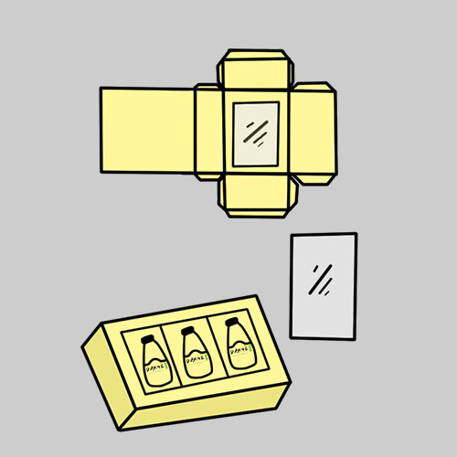
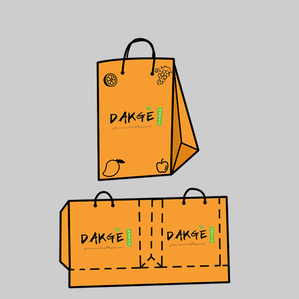

DAKGÉ berasal dari bahasa Korea 닦개 (dakkgae) yang berarti Wiper. Seperti halnya wiper pada mobil yang berfungsi ntuk membersihkan kaca,
produk DAKGÉ diharapkan dapat memiliki fungsi yang serupa yaitu membersihkan (mendetox) racun-racun yang ada pada tubuh manusia melalui sajian yang mengandung sayuran dan buah-buahan alami yang diolah menjadi produk minuman yang memiliki cita rasa enak serta tampilan yang unuk serta menarik,
sehingga dapat menarik minat customer dan dapat mengajak banyak orang untuk memulai pola hidup yang sehat.
MENU
Dragon Extract
Fresh combination between apple and dragon fruit with silky pudding.
Tropical Summer
Melon and pinapple juice with silky pudding and popping boba.
Orange Blush
Fresh orange juice with silky pudding and popping boba.
Healthie Greenie
Healthy combination between pinapple, lemon, and mustard greens.
Fresh Dragon Soup
Fresh combination between soursop and dragon fruit with silky pudding.
Freshie Orangie
Healthy combination between orange juice and carrot.
BOBA DRINK VS FRESH JUICE
Tren yang sedang berkembang saat ini adalah kumpul bersama sahabat atau dengan Bahasa gaul sering disebut nongkrong sembari ditemani dengan minuman segar yang bisa menghilangkan dahaga.
Minuman yang biasanya dipilih oleh mereka adalah minuman yang sedang tren saat ini yaitu boba drink. Minuman tersebut saat ini sedang merajai seluruh pangsa pasar di dunia kuliner,
hampir seluruh masyarakat selalu berbondong – bondong untuk menemukan minuman tersebut, dan sekarang hampir diseluruh penjuru kota sudah menawarkan jenis kuliner yang satu itu. Minuman ini ramai di cari oleh masyarakat karena mampu memberikan sensasi menarik saat menikmatinya,
tekstur kenyal dari boba itu sendiri membuat siapapun yang menyantapnya merasa ketagihan. Namun, apakah masyarakat menyadari bahwa minuman yang menyegarkan dan mampu menghilangkan dahaga disertai dengan sensasi menarik tersebut dapat menyebabkan berbagai penyakit dalam tubuhnya?
Minuman – minuman kekinian yang telah banyak beredar dipasaran tersebut memang memiliki rasa yang fantastis dan mampu menghipnotis masyarakat untuk terus membelinya. Namun, tahukah kamu bahwa fakta membuktikan bahwa minuman yang sedang hits tersebut mampu menyebabkan gangguan
pencernaan karena tekstur kenyal dan lengket dari boba bisa membuat organ pencernaan rusak karena sulit dicerna. Selain itu minuman yang memiliki rasa manis yang membuat orang merasa ketagihan tersebut dapat meningkatkan resiko berat badanmu yang bertambah lho,
itu karena kandungan gula yang digunakan cukup tinggi sehingga minuman tersebut mengandung banyak kalori yang bisa membuat berat badan menjadi meningkat. Selain itu, kadar manis yang berlebih juga bisa membuat wajah jadi mudah timbul jerawat dan membuat orang lebih mudah untuk terkena diabetes,
dan yang paling parah bisa memicu penyakit kanker di tubuh manusia. Setelah mengetahui bahayanya yakin masih ingin menikmati minuman hits yang memiliki rasa serta sensasi yang unik tersebut?
Ada banyak alternatif yang bisa diambil agar tetap bisa terlihat keren dengan menikmati minuman kekinian namun memiliki kandungan yang menyehatkan untuk tubuh. Sekarang sudah mulai berkembang juga minuman kesehatan yang memiliki rasa yang enak, sehingga bisa menjadi pilihan untuk mengganti minuman boba tersebut.
Salah satunya dengan mengkonsumsi jus buah alami yang mampu membantu mendetox racun – racun yang ada di dalam tubuh dan memberikan efek jangka panjang yang baik bagi tubuh.
Agar tidak merasa bosan, jus buah bisa dikreasikan dengan berbagai cara yang membuatnya selalu menarik untuk dikonsumsi, sehingga rasa penasaran akan selalu muncul untuk mencoba varian jus buah yang baru. Salah satu cara sederhana yang bisa menambah cita rasa jus buah agar memiliki sensasi yang berbeda saat menyantapnya
adalah dengan memadukan jenis buah yang berbeda dalam segelas sajian jus yang akan dinikmati. Dengan begitu, jus buah bisa memiliki rasa yang tidak membosankan.
Saat ini DAKGÉ hadir untuk memberikan sensasi yang menakjubkan tersebut kepada masyarakat. Selain bisa membuat tubuh menjadi sehat, jus buah yang di tawarkan oleh DAKGÉ juga memiliki rasa yang unik karena memiliki menu yang berbeda, dan selalu memadukan buah yang pas untuk dijadikan mix juice.
Selain jus yang memiliki rasa yang nikmat, DAKGÉ juga menambahkan topping yang pastinya rendah kalori dalam jus buah tersebut. Topping tersebut adalah silky pudding serta popping boba yang memiliki bahan dasar yang sehat bagi tubuh. Jus yang sudah memiliki paket lengkap ini juga dikemas dengan simple dan praktis sehingga bisa dibawa kemana – mana tanpa takut tumpah.
Jadi, setelah tahu bahwa ada pilihan lain selain minuman boba dengan rasa yang tak kalah nikmat serta mampu membuat tubuh lebih sehat dan yang pasti tetap kekinian dengan mengikuti perkembangan zaman, yakin masih mau pilih minuman boba? Sehat adalah sesuatu yang sangat penting dan perlu di jaga agar tubuh bisa lebih produktif untuk melakukan segala macam hal.
Dengan memulai untuk menjalani pola hidup sehat, dapat membantu tubuh untuk bekerja dengan lebih produktif serta bisa membuat umur menjadi lebih panjang. Maka dari itu sayangilah tubuh dengan mulai untuk hidup sehat.
PACKAGING
Packaging 1
Paper box bentuk buah sesuai dengan menu juice.
Packaging 2
Paper box untuk isi 16 botol juice.

Packaging 3
Paper box untuk isi 3 botol juice.
Packaging 4
Paper box untuk isi 1 botol juice.
Packaging 5
Paper box dengan 6 sisi untuk isi 1 botol juice.

Packaging 6
Paper bag untuk mempermudah saat membawa beberapa botol juice.